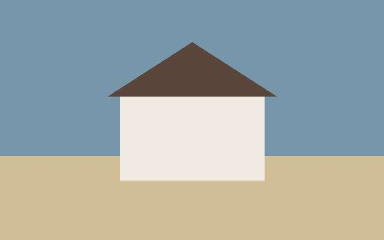

What does a buyer pay at closing in Myrtle Beach?
A buyer in Myrtle Beach pays the attorney, the title policy and the recording fee at closing. The seller pays the deed stamps. Ask the attorney for a written estimate a week before you sign.

Sold in 2026Who pays the deed stamps in South Carolina?
The seller pays the state deed recording fee by custom. The contract can move it to the buyer, so read that line before you sign. See closing costs and net proceeds.
- Attorney fee: set by the attorney you choose.
- Title policy: priced on the purchase price.
- Recording fee: charged by the county.
How do you read the settlement statement?
The attorney sends a settlement statement before closing. Read every line of it. A fee you did not expect is easier to question before the day you sign.
What does the title policy cover?
The owner's title policy pays if a claim on the house turns up after you buy it. The lender asks for its own policy as well. The attorney orders both.
- Owner's policy: protects you.
- Lender's policy: protects the lender.
When do you get the keys?
You get the keys when the deed is recorded and the seller is paid. On most closings that is the same day. Ask the attorney what time to expect it.
What should you bring to closing?
Bring a photo ID and proof that the funds were wired. The attorney tells you the exact amount the day before. Call the attorney's office to confirm the wire by phone.
For the full list, see the buyer guides.